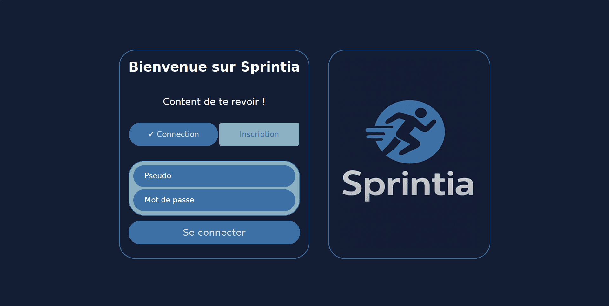
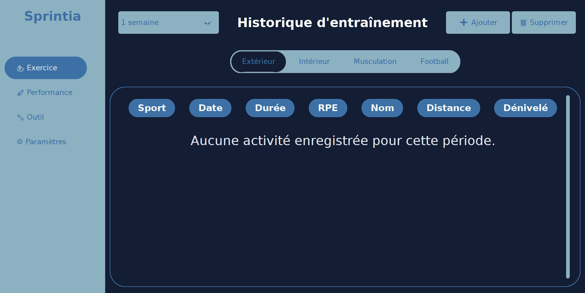
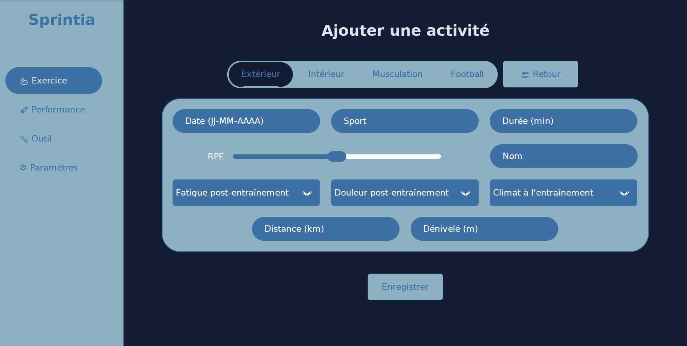
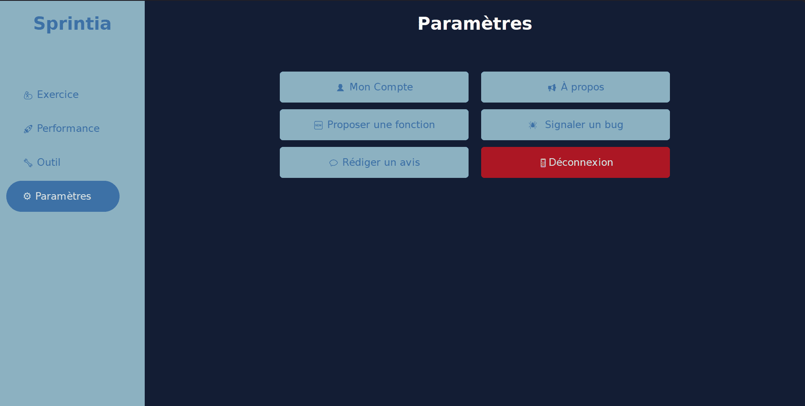

Type : Mise à jour majeure
Date de sortie : 10 Août 2025
SPRINTIA trouve enfin son identité avec cette troisième version majeure. SPRINTIA se dote d'une interface encore plus simple
et intuitive qu'auparavant.



